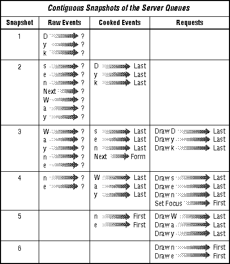
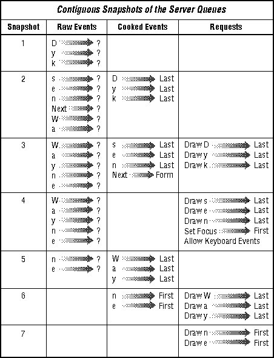

Xlib Programming Manual (O'Reilly & Associates, Inc.) |
In Chapter 3, "Basic Window Program," we showed you quite
thoroughly how to deal with Expose events. But all we did with pointer
and keyboard events was to exit the program. As you can guess, there can
be more to it than that. This chapter describes and demonstrates the handling
of keyboard and pointer events, describes keyboard and pointer mapping,
and describes how to set keyboard preferences. Internationalized keyboard
input is described in Chapter 11, Internationalized Text Input,
although it depends on many concepts described in this chapter.
Almost all serious workstations provide both KeyPress and KeyRelease events. Some personal computers, however, may not. Therefore, avoid depending on KeyRelease events if you want your client to be portable to the lowest classes of machines.
The second problem is adjusting for variations in the keys available on each keyboard and the codes they generate. We'll start explaining how this problem is solved by describing the contents of a key event.
KeyPress and KeyRelease events are stored in XKeyEvent structures, shown in Example 9-1. Each key event contains the keycode of the key that was pressed and state, a mask which indicates which modifier keys and pointer buttons were being held down just before the event. A modifier key is a key like Shift or Control that can modify the meaning of a key event. In addition to their effect on the processing of other keys, the modifier keys also generate key events with unique keycodes.
The XKeyEvent structure
typedef struct {
int type; /* Of event */
unsigned long serial; /* Last request processed by server */
Bool send_event; /* True if from a SendEvent request */
Display *display; /* Server connection */
Window window; /* "event" window reported in */
Window root; /* Root window event occurred on */
Window subwindow; /* Child window */
Time time; /* Milliseconds */
int x, y; /* Coordinates in event window */
int x_root, y_root; /* Coordinates relative to root */
unsigned int state; /* Key or button mask */
unsigned int keycode; /* Detail */
Bool same_screen; /* Same screen flag */
} XKeyEvent;
typedef XKeyEvent XKeyPressedEvent;
typedef XKeyEvent XKeyReleasedEvent;
The keycode member of XKeyEvent is a number
between 8 and 255. The keycode is the same regardless of whether a key
is pressed or released. The keycode for each physical key never changes
on a particular server, but the key with the same symbol on it on different
brands of equipment may generate different keycodes. For portability reasons
and because the keycode by itself without the state of the modifier keys
does not provide enough information to interpret an event, clients cannot
use keycodes by themselves to determine the meaning of key events.
Instead of using the keycode alone, X clients call XLookupString() to translate the key event into a keysym. A keysym is a defined constant that corresponds to the meaning of a key event. For example, the translation of the keycode generated by the "a" key on any system would be XK_a if no other keys were being held and XK_A if the Shift key were being held or if Shift Lock was in effect (all keysyms begin with XK_). The translation of the keycode for the Return key (which is labeled Enter or just with an arrow on some keyboards) would be XK_Return. The Enter key on the keypad, if any, would have the keysym XK_KP_Enter. Example 9-2 shows some keysym definitions. All keysyms are defined in <X11/keysymdef.h>.
Some sample keysym definitions
XLookupString() also provides an ASCII string that corresponds to the keysym or NULL if there is no associated string. By default, all the keys that have ASCII values will have that value as their string. For example, XK_A would have the string "A", XK_ampersand would have the string "&", and XK_4 would have the string "4". XK_Return, XK_Escape, and XK_Delete have ASCII values, but they are not printable. XK_Shift_L (the Shift key on the left side of the keyboard) would not normally have an associated string.#define XK_BackSpace 0xFF08 /* Back space, back char,... */ #define XK_Left 0xFF51 /* Move left, left arrow */ #define XK_Undo 0xFF65 /* Undo, oops */ #define XK_Num_Lock 0xFF7F #define XK_KP_Multiply 0xFFAA #define XK_Shift_L 0xFFE1 /* Left shift */ #define XK_space 0x020 /* Space */ #define XK_numbersign 0x023 /* # */ #define XK_3 0x033 #define XK_question 0x03f /* "?" */ #define XK_A 0x041 #define XK_e 0x065
The ASCII value for a particular keysym as returned by XLookupString() can be changed by the client using XRebindKeysym(), and it can be a string of any length, not just a single character. Even though keysyms like XK_F1 (the F1 key) have no default ASCII mapping, they can be given strings. This mapping would apply only to the client that calls XRebindKeysym().
With these introductory comments, we'll move right to the examples that handle keyboard input. Then we'll return to discuss keysyms in more detail and the various keyboard mappings and how they can be changed.
The function keys are not initially mapped to ASCII strings and can be ignored, but if the client allows the user to map them to an arbitrary string, it should treat them like any other printable character.
You may notice in Example 9-3 that XLookupString() returns something called an XComposeStatus. Some keyboards provide a Compose key, which is used to type characters not found on the keyboard keys. Its purpose is to make it possible to type characters from other languages without disturbing the normal operation of the keyboard. As it usually works, you press the Compose key followed by some other key to generate characters like é. A table is usually provided which tells you which keys correspond to each foreign character. Processing of multikey sequences using the Compose key is now supported as an input method through the Release 5 internationalization features. So the XComposeStatus argument of XLookupString() is now just a dummy.
Translating a key event to keysym and ASCII
Display *display;
XEvent event;
char buffer[20];
int bufsize = 20;
KeySym key;
XComposeStatus compose;
int charcount;
.
.
/* Open display, create window, select, map */
XNextEvent(display, &event);
switch( event.type ) {
.
.
.
case KeyPress:
charcount = XLookupString(&event, buffer, bufsize, &keysym,
&compose);
/* Branch according to keysym, then use buffer
* if the key is printable */
break;
case MappingNotify:
XRefreshKeyboardMapping(&event);
break;
}
Keysyms for accented vowels, tildes, and most combinations
found in Western languages are provided in the LATIN1 set. If you want
to display an accented e, for example, the keysym is XK_eacute.
If the desired character is not present in the desired font, the client
can prepare two or more text items for XDrawText() for displaying
the desired overstrike character and use the delta member to move
the second character back over the first. XDrawText() is capable
of drawing in a different font for each text item, in case the desired
accent is in a separate font from the desired character.
Example 9-4 is a modification to the basicwin program described in Chapter 3, "Basic Window Program," that puts up a pop-up dialog box. If the user presses a button in the basicwin window, the application puts up a dialog box, which the user can type into until a carriage return is typed. All the printable characters except Tab are supported, and Delete or Backspace operate as would be expected. The code allows the user to type the string while also handling the other events that might occur. This is done by placing the code for popping up the dialog in the branch for ButtonPress events, placing the code to redraw the dialog string in the branch for Expose events, and placing the code to process key events in the branch for KeyPress events.
Implementing a dialog box
/* Other include files */
#include <X11/keysym.h>
/* Other defined constants */
#define MAX_POPUP_STRING_LENGTH 40
#define MAX_MAPPED_STRING_LENGTH 10
/* Global variables display and screen */
void main(argc, argv)
int argc;
char **argv;
{
/* Declarations from basicwin */
.
.
.
/* The following are for pop-up window */
static Window pop_win;
char buffer[MAX_MAPPED_STRING_LENGTH];
int bufsize=MAX_MAPPED_STRING_LENGTH;
int start_x, start_y;
KeySym keysym;
XComposeStatus compose;
int count;
unsigned int pop_width, pop_height;
char string[MAX_POPUP_STRING_LENGTH];
int popped = False;
int length;
/* Create main window (win) and select its events */
.
.
.
XMapWindow(display, win);
/* Get events, use first to display text and graphics */
while (1) {
XNextEvent(display, &report);
switch (report.type) {
case Expose:
if (report.xexpose.window == pop_win) {
/* If pop_win is nonzero, it has been created,
* and window in Expose is never zero */
if (popped)
XDrawString(display, pop_win, gc, start_x,
start_y, string, strlen(string));
}
else { /* It's the main window */
/* Refresh main window as in basicwin */
}
break;
case ConfigureNotify:
/* Same as in basicwin */
.
.
.
break;
case ButtonPress:
/* Put up pop-up window, create if necessary */
if (!pop_win) { /* Create it and pop it */
/* Determine pop-up box size from font information */
pop_width = MAX_POPUP_STRING_LENGTH *
font_info->max_bounds.width + 4;
pop_height = font_info->max_bounds.ascent +
font_info->max_bounds.descent + 4;
pop_win = XCreateSimpleWindow(display, win, x, y,
pop_width, pop_height, border_width,
BlackPixel(display, screen),
WhitePixel(display, screen));
/* Calculate starting position of string in window */
start_x = 2;
start_y = font_info->max_bounds.ascent + 2;
XSelectInput(display, pop_win, ExposureMask | KeyPressMask);
}
/* If window is already mapped, no problem */
XMapWindow(display, pop_win);
popped = True;
break;
case KeyPress:
if (report.xkey.window == win) {
/* Key on main window indicates exit */
XUnloadFont(display, font_info->fid);
XFreeGC(display, gc);
XCloseDisplay(display);
exit(1);
}
else {
/* Get characters until you encounter a
* carriage return; deal with backspaces, etc. */
count = XLookupString(&report, buffer, bufsize,
&keysym, &compose);
/* Now do the right thing with as many
* keysyms as possible */
if ((keysym == XK_Return) || (keysym == XK_KP_Enter)
|| (keysym == XK_Linefeed)) {
XUnmapWindow(display, pop_win);
popped = False;
printf("string is %s\n", string);
break;
}
else if (((keysym >= XK_KP_Space)
&& (keysym <= XK_KP_9))
|| ((keysym >= XK_space)
&& (keysym <= XK_asciitilde))) {
if ((strlen(string) + strlen (buffer)) >=
MAX_POPUP_STRING_LENGTH)
XBell(display, 100);
else
strcat(string, buffer);
}
else if ((keysym >= XK_Shift_L)
&& (keysym <= XK_Hyper_R))
;/* Do nothing because it's a modifier key */
else if ((keysym >= XK_F1)
&& (keysym <= XK_F35))
if (buffer == NULL)
printf("Unmapped function key\n");
else if ((strlen(string) + strlen (buffer)) >=
MAX_POPUP_STRING_LENGTH)
XBell(display, 100);
else
strcat(string, buffer);
else if ((keysym == XK_BackSpace) ||
(keysym == XK_Delete)) {
if ((length = strlen(string)) > 0) {
string[length - 1] = NULL;
XClearWindow(display, pop_win);
}
else
XBell(display, 100);
}
else {
printf("keysym %s is not handled\n",
XKeysymToString(keysym));
XBell(display, 100);
}
XDrawString(display, pop_win, gc, start_x,
start_y, string, strlen(string));
break;
}
case MappingNotify:
XRefreshKeyboardMapping(&report);
break;
default:
/* All events selected by StructureNotifyMask
* except ConfigureNotify are thrown away here,
* since nothing is done with them */
break;
} /* End switch */
} /* End while */
}
Example 9-4 takes advantage of the fact that the keysyms
are constants arranged in groups with consecutive values. By looking for
any keysym in a given range, you do not need to specify every keysym you
intend to match.
Notice that the program uses keysyms to match all the keystrokes and then does different things depending on whether the keysym is a normal key, a modifier key, a function key, a delete key, or an enter key. If the key is printable, it copies the ASCII values returned by XLookupString() into the result string.
This program does have some weaknesses. One of them is that it redraws the entire string instead of just the character being changed. Secondly, using XTextItem structures for each character and calling XDrawText() instead of XDrawString() would support Tab characters and functions keys mapped to strings. Since a tab has to be expanded into a number of spaces before being drawn and function keys may be mapped to arbitrary strings, it is difficult to properly implement them with the approach we have used in Example 9-4.
We are going to describe the mapping between keysyms and strings first, because this is the mapping that applications are most likely to change. Following that, we'll describe what you need to know about the keycode-to-keysym mapping and modifier mapping to write normal applications. These mappings are normally only changed by clients run from the user's startup script that do nothing else, because they change the keyboard mapping for all applications.
After that, Sections 9.1.3.1 and 9.1.3.2 are optional reading. They describe the background and development of keysyms and how to write special purpose programs to change the server-wide mapping of keycodes to keysyms and the modifier mapping. These techniques are not needed in normal applications.
Any client in which the user is expected to type a large amount of text should support remapping of the function keys to strings. XRebindKeysym() is the only function that can change this string, the one returned by XLookupString(). The string can be any length. This change affects only the client that calls XRebindKeysym().
Example 9-5 is a short code sample that demonstrates how to remap function keys to strings. It binds the string "STOP" to Shift-F1 and "ABORT" to CTRL-Shift-F1. Since keyboards may have two Shift and two Control keys, one on each side, the process has to be done for both. Mapping the function keys combined with modifiers will not work on all servers. (On the Sun sample server, this code results in STOP being generated when F1 is pressed with any modifiers and ABORT never being generated.) However, mapping of unmodified function keys should work on all servers.
Mapping keys to strings
XLookupString() currently uses a linear search to find the keysym corresponding to each key event, and each call to XRebindKeysym() causes XLookupString() to run somewhat slower. This problem is exacerbated if you want a function key (or any other key) to generate the same string with any combination of modifier keys, since this requires 15 or more calls to XRebindKeysym().#include <X11/keysym.h> . . Display *display; KeySym modlist[2]; /* Array of modifier keysyms */ unsigned int string_length; unsigned int list_length; . . /* Open display */ . . /* Map Shift-F1 to "STOP" */ string_length = 4; list_length = 1; modlist[0] = XK_Shift_R; /* Do right shift key */ XRebindKeysym(display, XK_F1, modlist, list_length, "STOP", string_length); modlist[0] = XK_Shift_L; /* Do left shift key */ XRebindKeysym(display, XK_F1, modlist, list_length, "STOP", string_length); /* Map CTRL-Shift-F1 to "ABORT" */ string_length = 5; list_length = 2; /* Both right pressed */ modlist[0] = XK_Shift_R; modlist[1] = XK_Control_R; XRebindKeysym(display, XK_F1, modlist, list_length, "ABORT", string_length); /* Left Shift, Right Control */ modlist[0] = XK_Shift_L; modlist[1] = XK_Control_R; XRebindKeysym(display, XK_F1, modlist, list_length, "ABORT", string_length); /* Right Shift, Left Control */ modlist[0] = XK_Shift_R; modlist[1] = XK_Control_L; XRebindKeysym(display, XK_F1, modlist, list_length, "ABORT", string_length); /* Both left pressed */ modlist[0] = XK_Shift_L; modlist[1] = XK_Control_L; XRebindKeysym(display, XK_F1, modlist, list_length, "ABORT", string_length);
Although Shift is present on all keyboards and Control
on most, the remaining modifier keys are not standardized. There may be
Meta, Hyper, Super, Left, Right, or Alternate keys. X, however, has a fixed
set of logical modifiers, listed in the first column of Table 9-1. Each
of these logical modifier symbols corresponds to a bit in the state
member of the XKeyEvent structure. On each keyboard, there is a
mapping between the physical modifier keys and these logical modifiers.
Table 9-1 also shows the keysyms of the keys that are by default mapped
to the logical modifiers on a Sun-3 system and the corresponding keycodes
for that system. You can use the xmodmap command without arguments
to find out the default modifier mapping on any system.
| Logical Modifier | Default Keycodes of Modifier Keys (Sun-3) | Modifier Keysym (Sun-3) |
|---|---|---|
| ShiftMask | (0x6a), (0x75) | XK_Shift_L, XK_Shift_R |
| ShiftLockMask | (0x7e) | XK_Caps_Lock |
| ControlMask | (0x53) | XK_Control_L |
| Mod1Mask | (0x7f), (0x81) | XK_Meta_L, XK_Meta_R |
| Mod2Mask | (unmapped) | |
| Mod3Mask | (unmapped) | |
| Mod4Mask | (unmapped) | |
| Mod5Mask | (unmapped) |
Each keycode may have a list of keysyms, one for every logical modifier. Each list, of varying length, conveys the set of meanings for the key with each of the modifier keys pressed. This array of keysyms for each keycode is initially defined by the server. In most cases, only two keysyms are defined for the keys that represent single printable characters and only one for the rest.
One of few applications that might change the mapping between keycodes and keysyms would be an application that converted between QWERTY and DVORAK keyboard layout. These are the nicknames for two different layouts for the alphabetic characters on English language keyboards. The QWERTY keyboard in common use was originally designed to be slow enough so that mechanical typesetting machine operators would not be able to type fast enough to jam their machines. The DVORAK keyboard, on the other hand, was designed to place the most common letters in the English language under the home row of keys and is much faster.
Let's say a user wanted to use the DVORAK layout instead of the default, which is QWERTY. This application would not even need to create a window, but it would change the mapping of keycodes to keysyms with XChangeKeyboardMapping(). The user could then move the keycaps around on the keyboard or label them somehow. Except for calling XRefreshKeyboardMapping(), other applications would operate as usual. From then on, while the server was running, all applications would work properly with the DVORAK layout.
The keysyms are defined in two include files, <X11/keysym.h> and <X11/keysymdef.h>. Together these files define several sets of keysyms for different languages and purposes. There are sets for Latin, Greek, Cyrillic, Arabic, and so on, intended to allow for internationalization of programs. There are also sets for publishing and technical purposes, because these fields have their own "languages." <X11/keysym.h> defines which character sets are active, and <X11/keysymdef.h> defines the symbols in all the sets. Only <X11/keysym.h> needs to be included in an application because it includes <X11/keysymdef.h>.
By default, the enabled sets of defined keysyms include the ISO Latin character sets (1-4), a set of Greek characters, and a set of miscellaneous symbols common on keyboards (Return, Help, Tab, and so on). These are sufficient for making an application work in any Western language. Symbols for Katakana, Arabic, Cyrillic, Technical, Special, Publishing, APL, and Hebrew character sets are defined in <X11/keysymdef.h> but are not enabled in <X11/keysym.h> and may not be available on all servers. This is because some C compilers have a limit to the number of allowable defined symbols.
Many of the keysym sets share keysyms with sets earlier in the <X11/keysymdef.h> include file. For example, there is only one XK_space keysym because a space is common to all languages. XK_space is in LATIN1 so that it is always available. The LATIN2 and LATIN3 sets are quite short because they share most of their symbols with the previous sets.
There are two ways of thinking about how to define keysyms given such a situation: the Engraving approach and the Common approach.
The Engraving approach is to create a keysym for every unique key engraving. This is effectively taking the union of all key engravings on all keyboards. For example, some keyboards label function keys across the top as F1 through Fn, others label them as PF1 through PFn. These would be different keys under the Engraving approach. Likewise, Lock would differ from Shift Lock, which is different from the up-arrow symbol that has the effect of changing lower case to upper case. There are lots of other aliases such as Del, DEL, Delete, Remove, and so forth. The Engraving approach makes it easy to decide if a new entry should be added to the keysym set: if it does not exactly match an existing one, then a new one is created. One estimate is that there would be on the order of 300 to 500 miscellaneous keysyms using this approach, not counting foreign translations and variations.
The Common approach tries to capture all of the keys present on a number of common keyboards, folding likely aliases into the same keysym. For example, Del, DEL, and Delete are all merged into a single keysym. Vendors would be expected to augment the keysym set (using the vendor-specific encoding space) to include all of their unique keys that were not included in the standard set. Each vendor decides which of its keys map into the standard keysyms. It is more difficult to implement this approach, since a judgement is required whether a sufficient set of keyboards implement an engraving to justify making it a keysym in the standard set and which engravings should be merged into a single keysym. Under this scheme, there are an estimated 100 to 150 keysyms for an English language keyboard.
While neither scheme is perfect, the Common approach has been selected because it makes it easier to write a portable application. Having the Delete functionality merged into a single keysym allows an application to implement a deletion function and expect reasonable bindings on a wide set of workstations. Under the Common approach, application writers are still free to look for and interpret vendor-specific keysyms, but because they are in an extended set, application developers should be more conscious that they are writing applications in a nonportable fashion.
X does not suggest an interpretation of the keysyms beyond the first two and does not define any spatial geometry of the symbols on the key by their order in the keysym list. This is because the list of modifier keys varies widely between keyboards. However, when programming, it should be safe to assume that the third member in the keysym list would correspond to the key pressed with the next most common modifier available on the keyboard, which might be Control.
For keyboards with both left-side and right-side modifier keys (for example, Shift keys on each side that generate different keycodes), the bit in the state member in the event structure defines the OR of the keys. If electronically distinguishable, these keys can have separate keycodes and up/down events generated and your program can track their individual states manually.
Example 9-6 shows a simple program called mapkey that changes the keyboard mapping for all the applications running on the server. This application takes pairs of arguments that are keysyms and maps the keycode associated with the first keysym to the second keysym. In other words, you could use it to map the F1 key to be Escape and Home to be a Control key on the right side of the keyboard by typing the following:
Use mapkey with care, because it is easy to disable a server by remapping an alphanumeric key. Such a remapping cannot be reversed except by restarting the server.$ mapkey F1 Escape Home Control_R
An application for server-wide keymapping
#include <stdio.h>
#include <X11/Xlib.h>
#include <X11/Xutil.h>
#include <X11/Xatom.h>
#include <X11/keysym.h>
main(argc, argv)
int argc;
char **argv;
{
KeySym old, new;
int old_code;
Display *display;
if (!(display = XOpenDisplay(""))) {
fprintf(stderr,"Cannot open display '%s'\n",
XDisplayName(""));
exit(1);
}
argv++, argc--;
if (argc & 0x1) {
fprintf(stderr,"Usage: Keysymfrom Keysymto Keysymfrom \
Keysymto ...\n");
exit(1);
}
while (argc > 1) {
old = XStringToKeysym(*argv++);
new = XStringToKeysym(*argv++);
argc--, argc--;
old_code = XKeysymToKeycode(display, old);
XChangeKeyboardMapping(display, old_code, 1, &new, 1);
}
XFlush(display);
XCloseDisplay(display);
exit(0);
}
The application in Example 9-6 could be rewritten on a larger
scale to change a keyboard from QWERTY to DVORAK layout as described in
Section 9.1.2.3, "Keycodes to Keysyms." Since the keycodes are server-dependent,
the QWERTY-to-DVORAK conversion program would not be portable between machines
unless it used XGetKeyboardMapping() to get the current mapping
of keycodes to keysyms and then remapped them.
XGetKeyboardMapping() returns an array of keysyms that represent the current mapping of the specified range of keycodes.
While modifier keys generate KeyPress and KeyRelease events like other keys, modifier keys are the only keys reported in the state member of every key, button, motion, or border crossing event structure. The state member is a mask that indicates which logical modifiers were pressed when the event occurred. Each bit in state is represented by a constant such as ControlMask. state is used by XLookupString() to generate the correct keysym from a key event. Note that the state member of events other than key, button, motion, and border crossing events does not have the meaning described here.
XInsertModifiermapEntry() and XDeleteModifiermapEntry() provide the easiest ways by far to add or delete a few keycodes for a modifier.
Using XInsertModifiermapEntry() and XDeleteModifiermapEntry() is straightforward. You get the current modifier mapping stored in an XModifierKeymap structure with a call to XGetModifierMapping(). You specify this structure, a keycode, and one of the eight modifier symbols as the three arguments to XInsertModifiermapEntry() or XDeleteModifiermapEntry(). Both routines return a new XModifierKeymap structure suitable for calling XSetModifierMapping(). You should add or delete all the keycodes you intend to change before calling XSetModifierMapping().
You should not need to understand how the modifiers are stored to use the procedure described above for adding or deleting keycodes.
XSetModifierMapping() is the routine that actually changes the mapping. As such, it is when calling XSetModifierMapping() that any errors appear, even though they are usually caused by an invalid XModifierKeymap structure that was set earlier.
These are the requirements for the XModifierKeymap structure specified to XSetModifierMapping():
XSetModifierMapping() generates a MappingNotify event on a MappingSuccess status.
When finished mapping the keyboard, you can free the XModifierKeymap structures by calling XFreeModifiermap().
You might think that XKeysymToString() and XStringToKeysym() describe the mapping between keysyms and strings, but they don't. XKeysymToString() does not return the same string as is placed in the buffer argument of XLookupString(), when XKeysymToString() is given the keysym that XLookupString() returns. XKeysymToString() changes the symbol form of a keysym (XK_Return), which is a number, into a string form of the symbol ("Return"), and XStringToKeysym() does the reverse. XKeysymToString()(XK_F1) would return "F1" regardless of what string is currently mapping to the F1 key. Only XLookupString() returns the string mapped to a particular keysym with XRebindKeysym().
XKeycodeToKeysym() and XKeysymToKeycode()
make the mapping between single keycodes and keysyms more accessible. (XLookupKeysym()
actually takes a key event, extracts the keycode, and calls XKeycodeToKeysym().)
For XKeycodeToKeysym() and XLookupKeysym(), you must specify
which keysym you want from the list for the keycode, with the index argument.
Remember that the list of keysyms for each keycode represents the key with
various combinations of modifier keys pressed. The meaning of the keysym
list beyond the first two (unmodified, Shift or Shift Lock) is not defined.
Therefore, the index values of 0 and 1 are the most commonly used.
This section describes how to track the pointer and how to handle the pointer buttons. Border crossing events are discussed in Section 9.3, "Border Crossing and Keyboard Focus Change Events," because they must be handled in concert with keyboard focus change events.
Example 9-7 shows another modification to basicwin, the program described in Chapter 3, "Basic Window Program." It creates a child window of the top-level window of the application and allows the user to draw into it by moving the pointer with any button held down.
Getting all motion events
/* Global declarations of display and screen */
.
.
.
#define BUF_SIZE 2000
void main(argc, argv)
int argc;
char **argv;
{
/* Declarations from basicwin */
.
.
.
Window wint;
int xpositions[BUF_SIZE], ypositions[BUF_SIZE];
int i;
int count = 0;
Bool buffer_filled = False;
/* Open display and create window win */
.
.
.
wint = XCreateSimpleWindow(display, win, 20, 20, 50, 50,
border_width, BlackPixel(display, screen),
WhitePixel(display,screen));
XSelectInput(display, wint, ExposureMask | PointerMotionMask);
XMapWindow(display, wint);
.
.
.
/* Select events for and map win */
while (1) {
XNextEvent(display, &report);
switch (report.type) {
case MotionNotify:
printf("got a motion event\n");
xpositions[count] = report.xmotion.x;
ypositions[count] = report.xmotion.y;
XDrawPoint(display, wint, gc,
report.xmotion.x, report.xmotion.y);
/* The following implements a fast ring buffer
* when count reaches buffer size */
if (count <= BUF_SIZE)
count++;
else {
count = 0;
buffer_filled = True;
}
break;
case Expose:
printf("got expose event\n");
if (report.xexpose.count != 0)
break;
if (report.xexpose.window == wint) {
/* This redraws the right number of points;
* if the ring buffer is not yet filled,
* it draws count points; otherwise, it
* draws all the points */
for (i=0 ; i < (buffer_filled ?
BUF_SIZE : count) ; i++)
XDrawPoint(display, wint, gc, xpositions[i],
ypositions[i]);
}
else {
if (window_size == SMALL)
TooSmall(win, gc, font_info);
else {
/* Place text in window */
draw_text(win, gc, font_info, width, height);
/* Place graphics in window */
draw_graphics(win, gc, width, height);
}
}
break;
/* Other event types handled same as basicwin */
.
.
.
} /* End switch */
} /* End while */
}
The program keeps a record of the points drawn so that they
can be redrawn in case of an Expose event. The event record is a
ring buffer so that the latest BUF_SIZE pointer positions are always
maintained.
The program requires that one or more of the pointer buttons must be held down while drawing. (Most drawing applications require a button to be held, because otherwise it is impossible to move the pointer into a different application without drawing a trail of points to the edge of the window.) Therefore, drawing applications normally select ButtonMotionMask.
It would be quite easy to extend this program by giving each button a different meaning. Drawing with button 1 could mean drawing in black, button 2 could mean drawing in white, and button 3 could mean toggling the previous state of the drawn pixels. The only change necessary to implement this would be code that changes the foreground pixel value and logical operation in a GC or creates three GCs with these variations. The routine would determine which button was pressed from the state member of the event structure and determine what to do if more than one button was pressed.
To use this method, select PointerMotionHintMask in addition to the specific event masks you desire. PointerMotionHintMask is a modifier; it does not select events by itself.
Example 9-8 demonstrates how to read pointer events with PointerMotionHintMask selected. The code shown in the example draws lines between the series of points the user specifies with button clicks. The ButtonPress event indicates the beginning of a line, MotionNotify events allow the application to draw a temporary line to the current pointer position, and ButtonRelease events indicate that the line should be drawn permanently between the points indicated by the ButtonPress and ButtonRelease events.
Using pointer motion hints
/* Declare global variables display and screen */
.
.
.
void main(argc, argv)
int argc;
char **argv;
{
/* Declarations from basicwin */
.
.
.
int root_x, root_y;
Window root, child;
unsigned int keys_buttons;
Window wint;
XPoint points[BUF_SIZE];
int index = 1;
int pos_x, pos_y;
int prev_x, prev_y;
GC gcx;
wint = XCreateSimpleWindow(display, win, 20, 20, 50, 50,
border_width, BlackPixel(display, screen),
WhitePixel(display,screen));
XSelectInput(display, wint, ExposureMask | ButtonPressMask
| ButtonReleaseMask | ButtonMotionMask
| PointerMotionHintMask);
gcx = XCreateGC(display, win, 0, NULL);
XSetFunction(display, gcx, GXxor);
XSetForeground(display, gcx, BlackPixel(display, screen));
XMapWindow(display, wint);
while (1) {
XNextEvent(display, &report);
switch (report.type) {
case ButtonPress:
points[index].x = report.xbutton.x;
points[index].y = report.xbutton.y;
break;
case ButtonRelease:
index++;
points[index].x = report.xbutton.x;
points[index].y = report.xbutton.y;
break;
case MotionNotify:
printf("got a motion event\n");
while (XCheckMaskEvent(display,
ButtonMotionMask, &report));
if (!XQueryPointer(display, report.xmotion.window,
&root, &child, &root_x, &root_y,
&pos_x, &pos_y, &keys_buttons))
/* Pointer is on other screen */
break;
/* Undraw previous line, only if not first */
if (index != 1)
XDrawLine(display, wint, gcx, points[index].x,
points[index].y, prev_x, prev_y);
/* Draw current line */
XDrawLine(display, wint, gcx, points[index].x,
points[index].y, pos_x, pos_y);
prev_x = pos_x;
prev_y = pos_y;
break;
case Expose:
printf("got expose event\n");
if (report.xexpose.window == wint) {
while (XCheckTypedWindowEvent(display,
wint, Expose, &report));
XSetFunction(display, gcx, GXcopy);
XDrawLines(display, wint, gcx, points,
index, CoordModeOrigin);
XSetFunction(display, gcx, GXxor);
}
else {
/* Same code as basicwin */
}
break;
} /* End switch */
} /* End while */
}
In some applications, you do not need to track pointer motion
events to know where the pointer is at particular times. The pointer position
is given in ButtonPress, ButtonRelease, KeyPress,
KeyRelease, EnterNotify, and LeaveNotify events. You
can use any of these events to locate objects in a window.
In the MIT sample distribution of Xlib, motion history buffers were first implemented in Release 5. In any case, they are not a required part of a server implementation. Therefore, an application that uses motion history should also support the all-motion-events approach for use on servers that do not have the buffer.
The XTimeCoord structure is shown in Example 9-9.
The XTimeCoord structure
typedef struct _XTimeCoord {
short x,y; /* Position relative to root window */
Time time;
} XTimeCoord;
Example 9-10 shows another version of the program used to
demonstrate getting all motion events.
Reading the motion history buffer
/* Global declarations of display and screen */
.
.
.
#define BUF_SIZE 2000
void main(argc, argv)
int argc;
char **argv;
{
/* Declarations from basicwin */
.
.
.
Window wint;
int xpositions[BUF_SIZE], ypositions[BUF_SIZE];
int i;
int count = 0;
Bool buffer_filled = False;
/* Open display and create window win */
.
.
.
if (XDisplayMotionBufferSize(display) <= 0)
{
printf("%s: motion history buffer not provided on server",
argv(0));
exit(-1); /* Or use all events method instead */
}
wint = XCreateSimpleWindow(display, win, 20, 20, 50, 50,
border_width, BlackPixel(display, screen),
WhitePixel(display,screen));
XSelectInput(display, wint, ExposureMask | ButtonMotionMask
| PointerMotionHintMask);
XMapWindow(display, wint);
.
.
.
/* Select events for and map win */
while (1) {
XNextEvent(display, &report);
switch (report.type) {
case MotionNotify:
printf("got a motion event\n");
while (XCheckTypedEvent(display, MotionNotify, &report));
start = prevtime;
stop = report.xmotion.time;
xytimelist = XGetMotionEvents(display, window, start,
stop, &nevents);
for (i=0;i<nevents;i++)
XDrawPoint(display, window, gc, xytimelist[i]->x,
xytimelist[i]->y);
break;
case Expose:
printf("got expose event\n");
if (report.xexpose.window == wint) {
while (XCheckTypedWindowEvent(display,
wint, Expose, &report));
xytimelist = XGetMotionEvents(display, window,
0, CurrentTime, &nevents);
for (i=0 ; i < nevents ; i++)
XDrawPoint(display, window, gc, xytimelist[i]->x,
xytimelist[i]->y);
}
else {
while (XCheckTypedWindowEvent(display,
win, Expose, &report));
if (window_size == SMALL)
TooSmall(win, gc, font_info);
else {
/* Place text in window */
draw_text(win, gc, font_info, width, height);
/* Place graphics in window */
draw_graphics(win, gc, width, height);
}
}
break;
/* Other event types handled same as basicwin */
.
.
.
} /* End switch */
} /* End while */
}
When a pointer button is pressed, an active grab is triggered automatically (as described in Section 8.3.2.2, "Keyboard and Pointer Grabbing," an active grab means that all button events before the matching ButtonRelease event on the same button always goes to the same application, or sometimes the same window, as the ButtonPress). The automatic grab does not take place if an active grab already exists or a passive grab on the present key and button combination exists for some higher level window in the hierarchy than the window in which the ButtonPress occurred.
The OwnerGrabButtonMask that you can specify in calls to XSelectInput() controls the distribution of the ButtonRelease event (and any other pointer events that occur between the ButtonPress and ButtonRelease). If OwnerGrabButtonMask is selected, the ButtonRelease event will be sent to whichever window in the application the pointer is in when the event occurs. If the pointer is outside the application or if OwnerGrabButtonMask is not selected, the event is sent to the window in which the ButtonPress occurred.
OwnerGrabButtonMask should be selected when an application wants to know in which window ButtonRelease events occur. This information is useful when you require that both the ButtonPress and the matching ButtonRelease events occur in the same window in order for an operation to be executed. In practice, it does not hurt to select OwnerGrabButtonMask even if you do not need the response it provides. If you do not select OwnerGrabButtonMask, any changes you try to make to the event mask of the grabbing window before the ButtonRelease will not take effect.
The automatic grabs affect only the window to which button events are sent. To be more precise, they affect the value of the window member in the button event structures in the application's event queue. And for the event to be placed on the queue in the first place, it must have been selected on the window specified in the window member.
Now let's talk about distinguishing which pointer button was pressed. Two members of the XButtonEvent structure contain information about the button state. The button member specifies the button that changed state to trigger the event. The state member gives the state of all the buttons and modifier keys just before the event. You will need the state member only if you require that certain key or button combinations be pressed to trigger an operation.
Especially if you require that the same button must be pressed and released in a certain window, be sure to account for the case where, for example, button 1 is pressed, then buttons 2 and 3 are pressed and released (perhaps repeatedly) or pressed and held, before button 1 is again released. You must be careful if you structure your code as shown in Example 9-11 to handle ButtonPress and ButtonRelease events in pairs. There is no case for ButtonRelease in the example. Instead the code for ButtonPress looks for the matching ButtonRelease event. The matching ButtonRelease might not be the next button event, so intervening events must be dealt with. This problem appears only if you are trying to distinguish the button that was pressed.
Accepting button events in pairs
case ButtonPress:
/* Draw pane in white on black */
paint_pane(event.xbutton.window, panes, gc, rgc,
font_info, BLACK);
/* Keep track of which button was pressed */
button = event.xbutton.button;
/* Keep track of which window press occurred in */
inverted_pane = event.xbutton.window;
/* Get the matching ButtonRelease on same button */
while (1) {
/* Get rid of presses on other buttons */
while (XCheckTypedEvent(display, ButtonPress,
&event));
/* Wait for release; if on correct button, exit */
XMaskEvent(display, ButtonReleaseMask, &event);
if (event.xbutton.button == button)
break;
}
/* All events are sent to the grabbing window
* regardless of whether this is True or False,
* because owner_events only affects the
* distribution of events when the pointer is
* within this application's windows; we don't
* expect it to be for a window manager */
owner_events = True;
/* We don't want pointer or keyboard events
* frozen in the server */
pointer_mode = GrabModeAsync;
keyboard_mode = GrabModeAsync;
/* We don't want to confine the cursor */
confine_to = None;
GrabPointer(display, menuwin, owner_events,
ButtonPressMask | ButtonReleaseMask,
pointer_mode, keyboard_mode,
confine_to, hand_cursor, CurrentTime);
/* If press and release occurred in same window,
* do command; if not, do nothing */
if (inverted_pane == event.xbutton.window)
{
/* Convert window ID to window array index */
for (winindex = 0; inverted_pane !=
panes[winindex]; winindex++)
;
switch (winindex)
{
case 0:
raise_lower(display, screen,
RAISE);
break;
.
.
.
case 9: /* Exit */
XSetInputFocus(display,
RootWindow(display,screen),
RevertToPointerRoot,
CurrentTime);
/* Turn all icons back into windows */
/* Must clear focus highlights */
XClearWindow(display, RootWindow(display, screen));
/* Need to change focus border width back here */
XFlush(display);
XCloseDisplay(display);
exit(1);
default:
(void) fprintf(stderr,
"Something went wrong\n");
break;
} /* End switch */
} /* End if */
/* Invert back here (logical function is GXcopy) */
paint_pane(event.xexpose.window, panes, gc, rgc,
font_info, WHITE);
inverted_pane = NONE;
draw_focus_frame();
XUngrabPointer(display, CurrentTime);
XFlush(display);
break;
case DestroyNotify:
.
.
.
There are five logical buttons, but the number of physical buttons may range from one up to and perhaps greater than five. Mapping the pointer buttons might be done, for example, to simulate buttons 4 and 5 on a system with a three-button mouse. However, while physical buttons 1 and 2 were mapped to logical 4 and 5, no buttons would be mapped to logical 1 and 2. Therefore, there would have to be a way of toggling between the modes, perhaps using a function key.
The mapping of pointer buttons is analogous to the mapping between keycodes and keysyms in that it is global to the server and affects all clients. However, since the translation of a pointer event takes place in the server, unlike key event processing routines that use information stored in Xlib whenever possible, no routine is necessary to update the pointer mapping like XRefreshKeyboardMapping() updates the keyboard mapping.
XGetPointerMapping() returns the current mapping between physical and logical pointer buttons. XSetPointerMapping() sets this mapping.
XWarpPointer() has various features for moving only in certain situations. See the reference page in Volume Two, Xlib Reference Manual, for details.
Warping the pointer generates MotionNotify and
border crossing events just as if the user moved the pointer.
Pointer input can only be delivered to a window when the pointer is inside the window (unless the window grabs the pointer). Therefore, an application that depends on pointer input can expect to be idle when the pointer leaves the window and to be active again when the pointer enters. Notice that keyboard input can be diverted with the keyboard focus or grabs, while pointer input can only be diverted by grabs.
FocusIn and FocusOut events occur when the keyboard focus window changes (when some client calls XSetInputFocus()). By using focus events together with the border crossing events, an application should be able to determine whether or not it can get keyboard input. If it cannot get keyboard input, it may change its behavior somewhat. If it polls for keyboard input to allow for interrupts, it can stop polling. If it normally highlights a window when the pointer enters it, it should not do so if the keyboard focus is not the root window.
In general, to determine if it will get keyboard input, an application should first check FocusIn and FocusOut events. If the focus window is the root window, then the application should check LeaveNotify and EnterNotify to see if keyboard events are possible.
Additional focus change and border crossing events are generated when the origin and destination of the focus or pointer crossing do not have a parent-child relationship. These events are called virtual crossing events. See Appendix E, Event Reference, for a description of when these events are generated and how to distinguish them from normal crossing events.
Example 9-12 shows the code that would be used to monitor whether the application will receive keyboard input. When keyboard_active is True in this code, the application could highlight its main window.
Monitoring whether keyboard input will be available
Bool keyboard_active;
Bool focus;
/* Open display, create window, select input */
/* Select input before setting keyboard focus, if application does */
while (1) {
XNextEvent(display, &report);
switch (report.type) {
.
.
.
case EnterNotify:
printf("enter\n");
/* Make sure focus is an ancestor */
(report.xcrossing.focus) ?
(keyboard_active = True)
: (keyboard_active = False);
break;
case LeaveNotify:
printf("leave\n");
/* We get input only if we have the focus */
(focus) ? (keyboard_active = True)
: (keyboard_active = False);
break;
case FocusIn:
/* We get keyboard input for sure */
printf("focus in\n");
focus = True;
keyboard_active = True;
break;
case FocusOut:
/* We lost focus, get no keyboard input */
printf("focus out\n");
focus = False;
keyboard_active = False;
break;
.
.
.
}
} /* End while */
Example 9-12 could be used as a basis for code that highlights
a portion of an application when it can get keyboard input. It would be
in active mode when the keyboard_active flag is True.
When an EnterNotify event is received, the focus member of
the event structure is checked to see that the focus window is an ancestor
of the window in question. If so, keyboard_active is True.
When a LeaveNotify event is received, keyboard_active is
True only if the application has the focus. On FocusIn events,
keyboard_active is True, and a flag (focus) is set
to indicate whether the keyboard will be active after LeaveNotify
events.
The XQueryKeymap() function also returns this keyboard vector. Keyboard vectors are always independent of all the keyboard mapping and reading functions, since the bits in the vector correspond to keycodes that cannot be changed. This way of reading the keyboard is just like reading the pointer buttons. It can be useful for applications that treat the keyboard not as characters but, for example, as piano keys or drum pads.
Since XQueryKeymap() makes a routine trip request,
reading the keyboard this way could not achieve the same performance when
operating over a network as the same program implemented using events.
One of the most common situations where grabbing takes place is with button events. Most applications want both a ButtonPress and a ButtonRelease, so that they can compare the two positions. Since this is such a common desire, the server automatically grabs the pointer between the ButtonPress and ButtonRelease if both are selected, so that you do not have to make an explicit grab.
One reason for grabbing a device is so that you can handle a series of events contiguously without fear of intervening events. But when you grab a device, no other application can receive input from that device. Therefore, it is something to do only when absolutely necessary.
The routines that grab take several arguments that tailor the input response in these ways:
XGrabKey() and XGrabButton() arrange for a grab to take place when a certain combination of keys or buttons is pressed. After one of these routines is called, a passive grab is said to be in effect, until the specified keys and buttons are pressed. At that time, the grab is active and is indistinguishable from a grab generated by a call to XGrabKeyboard() or XGrabPointer(). After a passive grab, an active pointer grab will take effect when the following four conditions are met:
If pointer grabs and ungrabs cause the pointer to move in or out of a window, they generate EnterNotify and LeaveNotify events.
The XAllowEvents() routine is used only when the pointer_mode or keyboard_mode in previous grabbing calls were set to GrabModeSync. Under these conditions, the server queues any events that occur (but does not send them to the Xlib event queues for each application), and the keyboard or pointer is considered "frozen." XAllowEvents() releases the events that are queued in the server for the frozen device. After the call, the device is still frozen, and the server again queues any events that occur on that device until the next XAllowEvents() or Ungrab* call. In effect, XAllowEvents() allows events to come in a batch through the network to the event queues for each application in Xlib.
The pointer modes have no effect on the processing of keyboard events and vice versa.
Both a pointer grab and a keyboard grab may be active at the same time by the same or different clients. If a device is frozen on behalf of either grab, no event processing is performed for the device. It is possible for a single device to be frozen by both grabs. In this case, the freeze must be released on behalf of both grabs before events can again be processed.
Order entry applications need to move the keyboard focus from subwindow to subwindow within the application. Many of them interpret the Tab key as a command to move to the next information entry field. To do this reliably while allowing type-ahead, they must use the keyboard focus in combination with grabs. Here's why, as written by Wayne Dyksen of Purdue University. It begins with a little more about synchronous and asynchronous grabs, which you need to understand to follow the rest.
As "raw" events occur on devices, the Server processes them and sends them to clients. For example, given a raw event, the Server must determine to which window the event is to be sent; that is, the Server must determine the value of the window member of the event structure. The parameters pointer_mode and keyboard_mode arguments of XGrabButton(), XGrabPointer(), XGrabKey(), and XGrabKeyboard() control the processing of raw events during a grab; they can have either of the values GrabModeAsync or GrabModeSync.
If the value GrabModeAsync is used, then event processing for the grabbed device is asynchronous, as usual. That is, the Server processes and sends all grabbed events to the grabbing client as soon as they occur. Note that all ungrabbed events (e.g., Expose) are processed and sent normally.
If GrabModeSync is used, then, when the grab occurs, the Server records raw device events in an internal queue, but it temporarily stops processing and sending them to the grabbing client. The Server resumes raw event processing when the grabbing client sends either an XAllowEvents() request or an ungrab request.
Using GrabModeSync is often referred to as freezing the keyboard or pointer. This term is the source of some confusion since using GrabModeSync does not freeze (lockup) the pointer or keyboard themselves in any intuitive sense. One would guess that if the pointer or keyboard were "frozen," then using them would have no effect. In fact, use of the pointer and keyboard during a freeze continues to generate raw events which are recorded (but not processed or sent) by the Server. For example, the pointer cursor continues to move on the screen. Using GrabModeSync does not freeze the physical pointer or keyboard themselves, but rather it freezes the raw pointer or keyboard events at the Server. The raw events (not the devices) are eventually thawed (processed and sent) when the freezing client sends either an XAllowEvents() request or an ungrab request.
Consider the simplified forms fill-in application illustrated in Figure 9-1. Recall that the user gets from one blank to the next (from one window to the next) by using a special key (say Next). Each blank in the form is implemented by a separate X window. The client changes the keyboard input focus (via XSetInputFocus()) to the next blank (window) each time it receives a Next KeyPress event.
Simplified forms fill-in application
Suppose first that a client were to attempt to implement this forms fill-in application by having the "form" window (the parent of the blanks) asynchronously grab the Next key. When the form window receives a Next KeyPress event, it issues an XSetInputFocus() request, changing the keyboard input focus to the next blank.
Consider the possible scenario of events when a user types "D-y-k-s-e-n-Next-W-a-y-n-e," as illustrated in Figure 9-2. Each Snapshot shows the events and requests in queues at a moment in time; events as they are first generated ("Raw Events"), events as the server determines the window to which they should be delivered ("Cooked Events"), and requests made by the client in response to the arrival of these events. "Raw Events" are physical device events which the Server has queued and must process; for example, "s --> ?" indicates that the "s" key has been pressed and that the Server must decide to which window the KeyPress event is to be sent. "Cooked Events" are events which the Server has processed and is about to dispatch; for example, "D --> Last" indicates that the "D" key has been pressed and that the event is to be sent to the "Last Name" window. "Requests" are requests which have come from the client in response to events; for example, "D --> Last" indicates that the client has requested the Server to draw a "D" in the "Last Name" window.
Possible scenario of events using an asynchronous key grab

Consider now what might happen if a user were to type "D-y-k-s-e-n-Next-W-a-y-n-e." When the event "Next --> Form" illustrated in Snapshot 2 is received by the "Form" window, the client issues the request "Focus --> First" shown in Snapshot 3. Unfortunately, while the client is processing the Next KeyPress event, the Server is asynchronously processing further keyboard events. Thus, until the Server actually receives and processes the "Focus --> First" request, it continues to dispatch KeyPress events to the "Last Name" window. This is illustrated in Snapshot 3 where the Server is dispatching "W-a-y" to the "Last Name" window. Since the events "W-a-y" are sent to the "Last Name" window, the client issues the requests shown in Snapshot 4 to draw "W-a-y" in the "Last Name" window. Eventually, the Server does receive and process the "Focus --> First" request. Snapshot 4 and 5 show "n-e" being sent to and drawn in the "First Name" window. The above scenario produces the incorrect result illustrated in Figure 9-3.
Possible incorrect forms fill-in result using an asynchronous key grab
Note that the actual forms fill-in result using an asynchronous grab varies depending on the time between KeyPress events. In fact, the form would produce the correct result if a user were to type "D-y-k-s-e-n-Next" followed by a sufficiently long pause followed by "W-a-y-n-e."
Consider again the above example, only this time suppose that the client synchronously grabs the Next key (before any key events are processed). The sequence of events that occur in response to the user typing "D-y-k-s-e-n-Next-W-a-y-n-e" is illustrated in Figure 9-4.
Scenario of events using a synchronous key grab

As soon as the Server sees the raw Next KeyPress event, it initiates a synchronous grab. Snapshot 3 shows that the Server is continuing to record raw KeyPress events, but it has stopped "cooking" them. The KeyPress events "W-a-y-n-e" have accumulated in the Server's "Raw Events" queue. After receiving the Next KeyPress event, the client sends a request to the Server to change the focus to the "First Name" window ("Focus --> First") followed by a request to start cooking events ("Allow Events"). Because of the synchronous grab, the client knows that the Server receives and processes the "Focus --> First" request before it processes the raw event "W --> ?." The desired result is illustrated in Figure 9-5.
Correct forms fill-in result using a synchronous key grab
To summarize, the solution to this form of type-ahead
problem is to use GrabModeSync as the keyboard_mode argument
of the passive grab on the Tab key. Then call XAllowEvents() in
response the arrival of the Tab key event that signals the change in windows.
This synchronizes the change of keyboard focus from one window to another
and assures that the events go to the intended window.
There are five routines that deal with the keyboard and pointer preferences. XGetKeyboardControl() and XChangeKeyboardControl() are the primary routines for getting or setting all these preferences at once. XAutoRepeatOff() and XAutoRepeatOn() set the global keyboard auto-repeat status but are not able to control the auto-repeat of individual keys as XChangeKeyboardControl() can.
Example 9-13 shows the XKeyboardControl() structure.
The XKeyboardControl() structure
typedef struct {
int key_click_percent;
int bell_percent;
int bell_pitch;
int bell_duration;
int led;
int led_mode; /* LedModeOn or LedModeOff */
int key;
int auto_repeat_mode; /* AutoRepeatModeOff, AutoRepeatModeOn,
* AutoRepeatModeDefault */
} XKeyboardControl;
The following list describes each member of the XKeyboardControl()
structure:
The initial state of many of these parameters may be determined by command line arguments to the X server. On systems that operate only under the X Window System, the server is executed automatically by xdm during the boot procedure, and the defaults may have been modified in one of the xdm configuration files.
Table 9-2 shows the ranges for each member when no command
line arguments are specified for the server. The defaults when these values
are not set are server-dependent.
| Parameter | Range |
|---|---|
| key_click_percent | 0 to 100 |
| bell_percent | 0 to 100 |
| bell_pitch | hertz (20 to 20K) |
| bell_duration | milliseconds |
| led | 1 to 32 |
| led_mode | LedModeOff, LedModeOn |
| key | 8 to 255 |
| auto_repeat_mode | AutoRepeatModeDefault, AutoRepeatModeOff , AutoRepeatModeOn |
The XKeyboardState() structure
typedef struct {
int key_click_percent;
int bell_percent;
unsigned int bell_pitch, bell_duration;
unsigned long led_mask;
int global_auto_repeat;
char auto_repeats[32];
} XKeyboardState;
Except for led_mask, global_auto_repeat, and
auto_repeats, these members have the same range of possible values
listed in Table 9-2.
The led_mask member is not directly analogous to any member of XKeyboardControl(). Each bit set to 1 in led_mask indicates a lit LED. The least significant bit of led_mask corresponds to LED one.
The global_auto_repeat member is either AutoRepeatModeOff or AutoRepeatModeOn. It reports the state of the parameter set by the auto_repeat_mode member of XKeyboardControl().
The auto_repeats member is a key vector like the
one in KeymapNotify events and returned by XQueryKeymap().
Each bit set to 1 in auto_repeats indicates that auto-repeat is
enabled for the corresponding key. The vector is represented as 32 bytes.
Byte N (from 0) contains the bits for keycodes 8N to 8N+7,
with the least significant bit in the byte representing keycode 8N.
Every key on the keyboard is represented by a bit in the vector.
XChangePointerControl() takes three arguments (in addition to the ubiquitous display): accel_numerator, accel_denominator, and threshold.
The accel_numerator and accel_denominator arguments make
up a fraction that determines the multiple used to determine how many pixels
to move the cursor based on how much the physical pointer moved. The threshold
argument specifies how many pixels the physical pointer must have moved
for acceleration to take effect.
Xlib Programming Manual (O'Reilly & Associates, Inc.) |